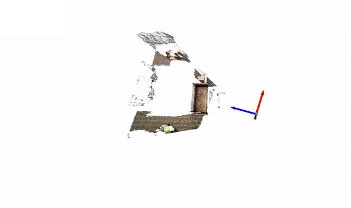

3D Reconstruction#
This example demonstrates using nvblox_torch to reconstruct a scene from the SUN3D
dataset.
Download an example SUN3D dataset by running the following command:
wget http://3dvision.princeton.edu/projects/2016/3DMatch/downloads/rgbd-datasets/sun3d-mit_76_studyroom-76-1studyroom2.zip
unzip sun3d-mit_76_studyroom-76-1studyroom2.zip
Launch the example by running:
python3 -m nvblox_torch.examples.reconstruction.sun3d \
--dataset_path <PATH>/sun3d-mit_76_studyroom-76-1studyroom2/
{kind=link}

The code for this example can be found at sun3d.py
Details#
We first create a torch dataloader to read the image data off the disk:
dataloader = Sun3dDataset.create_dataloader(root_dir=args.dataset_path,
sequence_name=args.sequence_name)
We then create a Mapper, and specify a couple of parameters, in particular:
a voxel size from the command line, and
the parameter
projective_integrator_max_integration_distance_mis set to5meters. This defines the maximum depth from the camera that depth data is integrated into the reconstruction.
# Create some parameters
projective_integrator_params = ProjectiveIntegratorParams()
projective_integrator_params.projective_integrator_max_integration_distance_m = 5.0
mapper_params = MapperParams()
mapper_params.set_projective_integrator_params(projective_integrator_params)
# Create the mapper
mapper = Mapper(
voxel_sizes_m=args.voxel_size_m,
mapper_parameters=mapper_params,
)
The Mapper is the main interface for nvblox_torch.
Internally the Mapper holds the map, which has several voxel-Layers and provides functions for:
adding data to the map (for example adding a depth image
mapper.add_depth_frame()),generating dependant layers (for example generating a mesh
mapper.update_color_mesh()), andgetting access to voxel data (for example with
mapper.tsdf_layer_view()).
We then loop through each frame in the dataset calling process_frame() on each sample
for idx, data in enumerate(dataloader):
print(f'Integrating frame: {idx}')
process_frame(mapper, data, feature_extractor, visualizer)
In process_frame() we add depth and color frames to the reconstruction
mapper.add_depth_frame(depth, pose, intrinsics)
mapper.add_color_frame(rgba, pose, intrinsics)
Periodically we update the mesh and visualize it:
mapper.update_color_mesh()
visualizer.visualize(mapper=mapper)
The mapper can be queried for map data for use in downstream applications. See, for example, the ESDF query example ESDF Example.